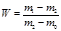
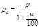
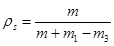
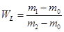
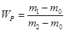

ВЕДОМСТВЕННЫЕ СТРОИТЕЛЬНЫЕ НОРМЫ
УСТРОЙСТВО
ОСНОВАНИЙ
ПОД ГРАЖДАНСКОЕ И
ПРОМЫШЛЕННОЕ СТРОИТЕЛЬСТВО
ГИДРОМЕХАНИЗИРОВАННЫМ СПОСОБОМ
ВСН 385-88
Минмонтажспецстрой СССР
Министерство монтажных и специальных
строительных работ СССР
Москва 1988
РАЗРАБОТАНЫ Всесоюзным научно-исследовательским институтом гидромеханизации, санитарно-технических и специальных строительных работ (ВНИИГС) - к.г.-м.н. В.И. Каминская, кандидаты технических наук Т.А. Медведева, И.П. Будько, В.М. Зубков;
трестом Гидромеханизация Минмонтажспецстроя СССР - инженеры П.В. Логачев, Ю.А. Вараницкая, А.С. Хабаров; ЛИИЖТ - д.т.н., проф. Н.Ч. Морарескул.
ПОДГОТОВЛЕНЫ К УТВЕРЖДЕНИЮ И ВНЕСЕНЫ
Главным техническим управлением Минмонтажспецстроя СССР.
С введением в действие ВСН 385-88 "Устройство оснований под гражданское и промышленное строительство гидромеханизированным способом" утрачивают силу ВСН 385-77 "Инструкция по намыву территорий на торфах".
|
Министерство монтажных и специальных строительных работ СССР (Минмонтажспецстрой СССР) |
Ведомственные строительные нормы |
ВСН 385-88 Минмонтажспецстрой СССР |
|
Устройство оснований под гражданское и промышленное строительство гидромеханизированным способом |
Взамен ВСН 385-77 Минмонтажспецстрой СССР |
Настоящие ведомственные строительные нормы распространяются на проектирование и устройство намывных оснований под промышленное и гражданское строительство из грунтовых материалов средствам гидромеханизации.
Требования норм должны выполняться при составлении проекта производства работ, проведении технологического контроля качества намыва основания под строительство и осуществлении водоохранных мероприятий.
Нормы не распространяются на производство указанных работ в районах вечной мерзлоты.
Нормы разработаны в соответствии с требованиями законодательства об экономии земель и охраны природной среды, нормативных документов Госстроя СССР по проектированию и строительству зданий и сооружений промышленного и гражданского назначения, в развитие ВСН 385-77 Минмонтажспецстроя СССР.
1.1. Проект производства работ (ППР) по намыву оснований разрабатывается на основе проекта организации строительства (ПОС) c учетом инженерно-геологических условий района работ в соответствии c требованиями СНиП 3.01.01-85 и ОСТ 36-100.0.02-84.
1.2. Техническое задание должно содержать сведения об объемах и сроках производства работ, количестве и типах используемых строительных машин и механизмов.
1.3. Исходный материал для разработки ППР должен содержать решение об утверждении рабочего проекта, генеральный план застройки территории (масштаб 1:500 или 1:1000), календарный план застройки намывных территорий и материалы инженерно-геологических изысканий, акты о выборе карьера, трасс пульпопроводов, водоотводящего коллектора, требования к намывным основаниям, сведения о существующей застройке, подземных сооружениях и коммуникациях.
|
Внесены Главным техническим управлением Минмонтажспецстроя СССР |
Утверждены заместителем министра монтажных и специальных строительных работ СССР " 4 " июля 1988 г. |
Срок введения в действие "1" января 1989г. |
Термины и определения, установленные настоящими ВСН, приведены в справочном приложении 1.
1.4. ППР включает в себя пояснительную записку с обоснованиями принятых решений, требования техники безопасности и рабочие чертежи, разработанные в соответствии с требованиями нормативных документов, приведенных в справочном приложении 2. Состав ППР и порядок разработки документации - по СНиП 3.01.01-85 (приложение 3, обязательное).
1.5. Намывные основания предназначены для застройки зданиями и сооружениями, разбивки парков, садов, скверов, устройства спортивных площадок и др. Намывное основание должно обеспечивать требования проекта под застройку зданиями и сооружениями.
В зависимости от назначения, намывные основания делятся по толщине слоя намытого грунта на:
искусственное намывное основание под застройку при толщине 4-5 м;
искусственное основание в виде песчаной пригрузки при толщине 1,5-2,0 м.
1.6. Толщину слоя намытого грунта уточняют исходя из планировочной отметки застраиваемой территории, прогнозируемой осадки природного основания и намытого грунта с учетом нагрузки от машин и механизмов при устройстве фундаментов, инженерных коммуникаций и сооружений.
Искусственное основание толщиной до 4-5 м намывают при необходимости устройства на намытых грунтах инженерных коммуникаций и сооружений, песчаную пригрузку - для устройства свайных фундаментов и разбивки парков, садов, скверов.
1.7. Природное основание рекомендуется делить по деформационным и прочностным свойствам слагающих его грунтов на устойчивое и неустойчивое (табл. 1).
1.8. Карьеры грунта для намыва оснований необходимо выбирать с учетом следующих условий:
расстояния до объекта намыва, наличия источников водо- и электроснабжения;
наличия требуемого объема грунта для намыва основания;
необходимости и целесообразности разработки полезной толщи совместно с вскрышей;
экономии земляных ресурсов;
выполнения требований охраны водной среды.
1.9. Предварительную оценку карьерного грунта для намыва оснований следует производить исходя из инженерно-геологического разреза и гранулометрического состава грунта. По содержанию фракций диаметром d < 0,1 мм карьерный грунт делят на группы по ГОСТ 25100-82. Предпочтительными для намыва территорий являются песчаные грунты и супеси. Суглинки, а также пылеватые и гравелистые пески используют для намыва территорий при соответствующем технико-экономическом обосновании (черт. 1).
Таблица 1
|
Грунт естественного основания |
Модуль деформации Е, МПа |
Коэффициент пористости, е |
Угол внутреннего трения j, град |
Удельное сцепление с, МПа |
Показатель текучести JL |
Сопротивление сдвигу t, МПа |
Коэффициент фильтрации КФ, м/сут |
|
|
I устойчивое |
Песок |
Более 20 |
Менее 0,65 |
Более 30 |
0,002 0,004 |
- |
- |
Более 0,3 |
|
II устойчивое |
Супеси, суглинки, глины |
20-5 |
0,65-0,80 |
30-12 |
0,011-0,036 |
Менее 0,75 |
Более 0,075 |
0,3-1´10-5 |
|
III неустойчивое |
Илы, торф, суглинки, глины |
Менее 5 |
Более 0,8 |
Менее 12 |
Менее 0,036 |
Более 0,75 |
Менее 0,075 |
1,0-1´10-5 |
Группы карьерных грунтов для намыва оснований
Песок: 1 - гравелистый; 2 - крупный; 3 - средней крупности; 4 - мелкий;
5 - пылеватый; 6 - супесь; 7 - суглинок
Черт. 1
1.10. Пригодность грунтов для намыва определяется по гранулометрическому составу, а также содержанию в них органических примесей до 3 %, предусмотренных ГОСТ 25100-82 и СНиП 3.02.01-87.
1.11. Объем грунта, требуемого для намыва, следует определять исходя из размеров площади и высоты намыва, осадки подстилающего и намытого грунтов, потерь грунтов в соответствии со СНиП 3.02.01-87 и СНиП 3.01.03-85.
1.12. Потери грунта при намыве оснований следует определять как разность объема грунта, разработанного в карьере, и проектного профильного объема грунта, намытого в основание.
Потери грунта при намыве оснований определяются по таблице, разработанной в соответствии со СНиП IV-5-84 и СНиП 3.02.01-87 (справочное приложение 4 настоящих ВСН).
1.13. Технологическую схему намыва следует выбирать исходя из инженерно-геологических условий района работ, состава карьерного грунта и требований к намытому грунту в соответствии с техническим заданием.
1.14. В процессе намыва грунта на карты необходимо выполнять контроль качества сбросных вод гидромеханизации и контроль за состоянием воды водных объектов в районе производства работ с учетом требований, установленных органами водного надзора и водопользователями. При выполнении водоохранных мероприятий следует руководствоваться ВСН 486-86 Минмонтажспецстроя СССР "Обеспечение охраны водной среды при производстве работ гидромеханизированным способом".
2.1. Подготовительные работы в соответствии с ППР должны включать в себя:
разбивку и закрепление на местности спроектированных сооружений, карьеров, карт намыва, установку и привязку осадочных марок и пьезометров;
вырубку леса и кустарника, корчевку пней, при необходимости, на участках намыва, срезку и удаление некачественного грунта и почвенного слоя с территорий, спроектированных для намыва;
трассировку и прокладку магистральных водоводов и пульпопроводов, прокладку линий электропередачи и связи;
устройство подъездных дорог, первичного котлована для монтажа земснаряда;
устройство защитных дамб из местного или привозного грунта в соответствии c ППР;
устройство канав вдоль границ участков и карт намыва для предотвращения заболачивания прилегающей территории, для водосброса паводкового и ливневого стоков.
2.2. Водосбросные колодцы устраивают с максимальным учетом местных условий для дренажа.
Устройство прудков-отстойников не допускается на участке, предназначенном для строительства зданий и сооружений.
2.3. Устройство линий электропередачи и связи производят за пределами карт намыва на основе планов ППР.
2.4. Вынос за пределы карт намыва сооружений, отключение или ограждение инженерных коммуникаций, находящихся в зоне производства работ, осуществляют по согласованию с другими ведомствами по их принадлежности на основании разработки проектных решений в ПОС.
2.5. Объемы выполненных подготовительных работ следует подтверждать соответствующими актами.
2.6. Приемку законченных подготовительных работ производят рабочие комиссии с составлением акта на скрытые работы.
3.1. Основные гидромеханизированные работы состоят из разработки грунта в карьере, гидротранспортирования и укладки грунта на карту намыва.
3.2. Способ разработки грунта в каждом случае выбирают в зависимости от типа земснаряда, глубины разработки карьера и категории грунта по трудности разработки.
Глубина разработки карьера задается в зависимости от геологического строения, проектного решения и принятых требований к намывным грунтам.
Категорию грунта и расходы воды на разработку и транспортирование 1 м3 грунта принимают согласно справочному приложению 5.
Толщину слоя недобора грунта следует принимать в зависимости от производительности земснаряда по пульпе 5000-3500 м3/ч и меньше 3500 м3/ч соответственно 1 и 0,7 м.
3.3. Тип землесосного оборудования выбирают в зависимости от планируемого объема разработки грунта, сроков и условий производства работ.
3.4. Количество земснарядов или установок определяют делением годового объема выработки на годовую нормативную производительность выбранного земснаряда или установки, рассчитанную для условий производства работ по ЕНиР.
3.5. В зависимости от дальности гидротранспортирования и высоты подъема пульпы необходимо по известным зависимостям определять диаметр пульпопровода и рабочего колеса грунтонасоса.
Тип грунтозаборного устройства следует определять в зависимости от грунтовых условий карьера и глубины разработки грунтов.
3.6. Пульпопровод на карте намыва должен располагаться на расстоянии не менее 6-8 м и не более 15 м от дамб обвалования.
Расстояния между распределительными пульпопроводами следует определять исходя из состава карьерного грунта и требований к качеству намытого грунта в пределах 40-200 м (см. черт. 1).
3.7. Сброс осветленных вод при намыве устраивается в зависимости от принятых способа и схемы намыва.
3.8. При удалении карьера от водоема на расстояние менее 0,5 км делают пионерную выемку и проходку канала. По окончании работы земснаряд выводят по подводящему каналу или разбирают на отдельные агрегаты и вывозят транспортом.
3.9. При оборотном водоснабжении дополнительную подачу воды на покрытие потерь принимают в пределах 20 % расчетного расхода воды на разработку и транспортирование грунта (справочное приложение 5).
3.10. Устройство промежуточных резервов-кавальеров допускается при дальности гидротранспортирования грунта, требующей установки трех или более перекачивающих станций, а также при необходимости обогащения карьерного грунта.
3.11. При отсутствии карьеров вблизи намываемого основания, если оно располагается в прибрежной зоне, доставка грунта может быть осуществлена из удаленных карьеров баржами с разгрузкой гидроперегружателями.
3.12. При достижении проектной отметки поверхности намытого основания и требуемой плотности сложения намытого грунта производят планировку поверхности намытого основания и демонтаж водосбросных колодцев.
3.13. К завершающим работам относятся демонтаж земснарядов, перекачивающих и насосных станций, пульпопроводов, линий электропередачи и связи.
3.14. Технология намыва оснований должна обеспечивать заданные в проекте значения физико-механических характеристик намытых грунтов и сроки подготовки основания.
3.15. Способ, схему намыва и технологические параметры следует назначать в основном исходя из гранулометрического состава карьерного грунта, устойчивости природного основания и требований к намытому основанию, принятых в проекте и предусмотренных техническими условиями по его устройству. Способы и технологические схемы намыва оснований применительно к карьерным грунтам и типам природного основания приведены в табл. 2.
3.16. При выборе способа и технологической схемы рекомендуется разделять:
природные основания на три типа (см. табл. 1);
карьерные грунты по грануломотрическому составу (см. черт. 1).
3.17. При намыве оснований следует применять способы:
основные - эстакадный, низкоопорный и безэстакадный;
дополнительные - послойно-грунтоопорный и выторфовочно-намывной.
3.18. Эстакадный способ применяют при намыве с эстакад высотой 2,0-2,5 м, заглубленных в грунт до 1 м. Низкоопорный способ используют с устройством разводящего пульпопровода на опорах высотой до 1,5 м.
Послойно-грунтоопорный способ выпуска пульпы осуществляют сосредоточенно из торца конечного звена пульпопровода, укладываемого на земляные валы высотой до 1,5 м.
Таблица 2
|
Технологическая схема |
Карьерный грунт |
Тип природного основания (по табл. 1) |
|
|
Эстакадный |
Односторонняя, рассредоточенно-торцевая, встречно-торцевая |
Супесь, суглинок, глина |
Устойчивое I, II |
|
Низкоопорный |
Пионерно-торцевая, встречно-торцевая, односторонняя |
Супесь, песок пылеватый |
Устойчивое I, II |
|
Односторонняя, рассредоточенно-торцевая |
Неустойчивое III |
||
|
Послойно-грунтоопорный |
Пионерно-торцевая, Односторонняя, зональная |
Песок пылеватый |
Устойчивое I, II Устойчивое I, II Неустойчивое III |
|
Безэстакадный |
Пионерно-торцевая, односторонняя |
Песок гравелистый, крупный, средний, мелкий |
Устойчивое I, II |
|
Двухъярусная, однослойная |
Песок средний |
Устойчивое I |
|
|
Цикличная, дренажная |
Песок средний, мелкий |
Неустойчивое III |
|
|
Выторфовочно-намывной |
Дренажная |
Песок средний, мелкий |
Неустойчивое III |
3.19. Выторфовочно-намывной способ с использованием установки УВН-1 путем размыва торфа с одновременной заменой его песком рекомендуется применять на торфах толщиной 4-6 м и при карьерных грунтах групп 2, 3 и 4 (см. черт. 1). Скорость струи при расходе пульпы из трубы-иглы 0,5-0,6 м3/с назначают равной 9; 7; 2 м/с соответственно в торфах со степенью разложения менее 25, 25-45 и более 45 %.
3.20. Допустимую интенсивность намыва следует назначать исходя из состава карьерного грунта и типа природного основания (табл. 3).
3.21. Технологические схемы следует назначать применительно к выбранному способу:
основные - пионерно-торцевая, однослойная (бесколодцевая), встречно-торцевая и односторонняя;
дополнительный - зональная, двухъярусная, рассредоточенно-торцевая, цикличная и дренажная.
Таблица 3
|
Интенсивность намыва, м/сут |
||||||
|
песок |
супесь |
суглинок, глина |
||||
|
гравелистый, крупный |
средний |
мелкий |
пылеватый |
|||
|
I - устойчивое |
1,2 |
1,0 |
0,8 |
0,45 |
0,35 |
0,25 |
|
II - устойчивое |
0,8 |
0,6 |
0,4 |
0,35 |
0,30 |
0,20 |
|
III - неустойчивое |
- |
0,05 |
0,10 |
0,10 |
0,15 |
0,20 |
3.22. Пионерно-торцевая схема намыва предусматривает постоянное продвижение фронта намыва при периодическом наращивании пульпопровода. При пионерно-торцевой схеме с челночным перемещением разводящего пульпопровода землесосными снарядами типа 3500 и 5000 м3/ч возможность максимального слоя намыва соответственно составляет 1,0-1,5 м при наращивании распределительного пульпопровода и 0,7-1,0 м при его укорачивании.
Дополнительно к пионерно-торцевой схеме рекомендуется однослойная схема намыва (рекомендуемое приложение 6, черт. 1).
Однослойную схему намыва слоя толщиной 4-5 м применяют при намыве карьерного песчаного грунта d60/d10 < 3 устойчивое основание. Намыв производят безэстакадно-торцевым способом с устройством дамб обвалования и дренажных канав по контуру микрорайона.
При небольших площадях намыва (до 50 га) возможно производство работ без разбивки территории микрорайона на карты намыва.
Намыв осуществляют одним слоем из торцов раструбных труб, которые устанавливают на намытом откосе пляжа на 05-0,6 м выше проектной отметки намыва. Расстояния между пульпопроводами принимают 20-50 м при толщине слоя соответственно 5-3 м. Обвалование в процессе намыва поддерживается непрерывно и восполняется из подстилающего или намытого грунта.
3.23. Одностороннюю схему намыва осуществляют рассредоточенно-торцевым выпуском пульпы со свободным откосом. Распределительный пульпопровод разделяют на две одновременно работающие нитки, которые располагают на расстоянии не более 15 и от дамбы обвалования. Расстояние между осями ниток пульпопроводов определяется размерами карты намыва в зависимости от производительности используемых земснарядов и принятой интенсивности намыва.
3.24. Зональная схема намыва, при которой пылеватые и глинистые фракции отмывают в отстойные прудки, располагаемые на площадях будущих зеленых зон, а песчаные фракции укладывают на участках, планируемых под застройку, схему применяют согласно рекомендуемому приложению 6, черт. 2.
Пульпопровод укладывают на земляные валы высотой до 1,5 м. Для обеспечения требуемого фракционирования на откосе намыва необходимо устройство направляющей дамбы на расстоянии 60-80 м от выпуска пульпы, обеспечивающей сток гидросмеси с повышенным содержанием пылевато-глинистых фракций в отстойный прудок.
3.25. Двухъярусная схема намыва позволяет начать укладку инженерных коммуникаций до окончания намыва. Схема намыва включает в себя единый цикл подготовки основания: укладку инженерных коммуникаций в намытом слое первого яруса толщиной 2-3 м с последующим их замывом песчаным грунтом до планировочной отметки (рекомендуемое приложение 6, черт. 3).
3.26. По встречно-торцевой схеме намыв осуществляют путем сосредоточенного выпуска пульпы, переменно-направленного с обоих концов карты к поочередно работающим водосбросным колодцам (рекомендуемое приложение 6, черт. 4).
3.27. Рассредоточенно-торцевая схема с выпуском пульпы из торца и дополнительных отверстий в нижней части пульпопровода рекомендуется для пылеватых песков и супесей. Диаметр отверстий (30-70 мм) и расстояние между ними (5-15 м) назначают в зависимости от гранулометрического состава грунта и требуемых уклонов пляжа. Эту схему применяют при эстакадном и низкоопорном способах (рекомендуемое приложение 6, черт. 5).
3.28. Цикличная схема намыва основания путем образования тонкого покрова грунта периодическим изменением консистенции пульпы c соотношением твердого грунта к воде от 1:10 до 1:30 исключает выпоры в слабых грунтах природного основания. При достижении толщины намытого слоя 0,8-1,0 м консистенцию следует поддерживать 1:10. Рекомендуется цикличную схему применять при намыве песчаных грунтов на торфах.
3.29. В зоне 35-45 м от выпуска пульпы рекомендуется дренажная схема с использованием вертикальных древ для разгрузки фильтрационных напоров в природном основании и обеспечения равномерного уплотнения торфа под намытой песчаной толщей.
4.1. Прогнозирование состояния намытого основания производится с целью обеспечения требуемого качества намытых грунтов при минимальных затратах в конкретных инженерно-геологических условиях на стадии проектирования и производства работ.
4.2. При прогнозировании следует определять:
изменение гранулометрического состава грунта в зависимости от требований качества намытого основания;
осадку намытой толщи от собственного веса;
осадку природного основания под нагрузкой намытого грунта.
4.3. Гранулометрический состав намытого грунта определяется закономерностями фракционирования грунта. На характер фракционирования влияют состав карьерного грунта и технология намыва.
4.4. При прогнозировании раскладки фракций на откосе рекомендуется пользоваться следующими методами:
методом аналогового расчета, основанного на материалах геотехнического контроля намыва оснований разных типов;
расчетным методом, в основу которого положено использование вероятностного подхода при определении раскладки частиц грунта и изменении гидравлических параметров потока на откосе.
Распределение фракций грунта Ф, %, по длине откоса намыва L, м
Песок: а - средний; б - мелкий; в - пылеватый
Черт. 2
4.5. Метод аналогового расчета допускается для определения фракционирования при намыве оснований из песчаных карьерных грунтов. Распределение фракций грунта Ф, %, по длине откоса намыва приведено на черт. 2.
4.6. Расчетный метод раскладки фракций грунта на откосе намыва выполняется в следующем порядке:
а) определяются гидравлические параметры потока гидросмеси на откосе намыва (удельный расход, скорость, глубина, уклон поверхности отложений);
б) проводятся расчеты кривых рассеивания фракций;
в) выполняется расчет содержания фракций в составе намытого грунта на различных расстояниях от места выпуска.
Изменение плотности rd намытого грунта:
а - по откосу намыва L; б - во времени t
Песок: 1 - средний; 2 - мелкий; 3 - пылеватый
Черт. 3
Таблица 4
|
ГОСТ 25100-82 |
Плотность частиц грунта, г/см3 |
Плотность сухого грунта, rd, г/см3 |
Коэффициент пористости е |
Относительная плотность, Jd |
Коэффициент фильтрации, Кф, м/сут |
Угол внутреннего трения, j, град. |
Сцепление С, МПа |
Коэффициент уплотнения а, МПа-1 |
Модуль деформации Е, МПа |
Осадка от толщины намываемого слоя, % |
Карьерный грунт. Содержание d < 0,05 мм, % |
|
Песок средний |
2,66-2,65 |
1,60 1,70 |
0,65 0,55 |
0,60 0,80 |
15,0-7,0 |
34 38 |
Менее 0,005 |
0,1 0,01 |
20 40 |
0,75 1,5 |
20 |
|
Песок мелкий |
2,67-2,65 |
1,55 1,66 |
0,72 0,60 |
0,35 0,65 |
6,0-1,5 |
27 33 |
0,001 0,005 |
0,1 0,01 |
18 28 |
0,8 2,0 |
25 |
|
Песок пылеватый |
2,68-2,69 |
1,47 1,55 |
0,80 0,70 |
0,30 0,50 |
3,0-0,7 |
25 28 |
0,002 0,005 |
0,1 0,5 |
11 18 |
1,0 2,5 |
35 |
|
Супесь |
2,70-2,66 |
1,35 1,52 |
0,93 0,75 |
0,30 0,50 |
0,1-0,08 |
21 24 |
0,005 0,01 |
1,0 0,1 |
7,0 10 |
1,5 4,0 |
50 |
Примечания: 1. В числителе - показатели для грунтов после намыва, в знаменателе - после намыва через год;
2. Потери фракций d < 0,05 мм при намыве принимаются равными 10 %, d < 0,01 мм - 100 % (см. рекомендуемое приложение 4).
Расчет фракционирования грунта при намыве осуществляется с помощью ЭВМ (программа GRUNT, SM-4, ВНИИГС).
4.7. Нормативные (усредненные) величины физико-механических характеристик определяются по гранулометрическому составу намытых грунтов.
Физико-механические характеристики грунтов, намытых из различных карьеров, приведены в табл. 4.
4.8. Определение плотности намытого грунта rd (плотности сухого грунта) по длине откоса L для песчаных грунтов допускается выполнять по номограмме (черт. 3, а, б).
Требование к плотности намытого песчаного грунта с учетом нагрузки от промышленных сооружений и жилых зданий приведены в приложении 7, табл. 4.
Плотность намытого грунта с содержанием фракций Фd < 0,005 мм более 3 % допускается определять согласно рекомендуемому приложению 7, табл. 3.
4.9. Нормативные значения и осадки торфа под нагрузкой намытой толщи допускается определять согласно рекомендуемому приложению 7, табл. 1 и 2.
4.10. При определении плотности намытого глинистого грунта и осадки глинистого грунта и торфа природного основания рекомендуется использовать табл. 1 и рекомендуемое приложение 7, табл. 3 и чертеж.
4.11. Оценку значений коэффициентов фильтрации намытого грунта при нормативной плотности сухого грунта для различных грунтов допускается выполнять по данным табл. 4.
5.1. При намыве оснований под строительство контроль качества гидромеханизированных работ необходимо производить на основе сопоставления технологии разработки и укладки грунта с ППР.
5.2. Контроль качества намыва должен осуществляться строительной организацией, производящей намыв, в течение всего периода выполнения работ.
5.3. При разработке грунта в карьере необходимо контролировать последовательность разработки блоков, полноту и глубину их разработки.
5.4. При намыве территорий необходимо контролировать следующие технологические параметры:
правильность прокладки распределительных пульпопроводов и подачи пульпы на карту, устройство обвалований, предотвращение промоин и застойных зон;
плотность пульпы на выпуске, плотность (мутность) отработанных вод гидромеханизации. Плотность пульпы при необходимости рекомендуется измерять ареометрическим методом, а также с использованием мерной емкости, заполняемой из дополнительных выпусков диаметром 70-80 мм, врезанных в трубопровод вблизи основного выпуска;
отметки намытой поверхности путей периодической нивелировки;
соблюдение допустимых размеров прудка, режима работы и состояния водосбросных сооружений дренажных устройств.
5.5. Отбор проб намытого грунта для определения показателей состава и физико-механических свойств необходимо производить по поперечникам, нанесенным на координатную основу территории намыва.
5.6. Для определения гранулометрического состава, влажности и плотности слежения намытого грунта следует отбирать пробы по толщине намытого слоя из расчета одна проба на объем 2000-5000 м3 намытого грунта. В случае специальных исследований, предусмотренных проектом, для определения коэффициентов фильтрации, сжимаемости, модуля деформации, угла внутреннего трения, удельного сцепления - одна проба на 50 тыс. м3 намытого грунта.
При лабораторных испытаниях грунта следует соблюдать требования ГОСТ 12536-79, ГОСТ 25100-82 и ГОСТ 5180-84.
5.7. Плотность намытого песчаного грунта rd = 1,53 г/см3 (плотность сухого грунта) при влажности грунта 16-18 % с несущей способностью более 0,05 МПа следует принимать за показатель, обеспечивающий возможность продолжения работ по намыву до проектной отметки, проезда машин и механизмов.
Для контроля степени уплотненности намытого песчаного грунта рекомендуется определять показатель относительной плотности Jd:
плотные 0,66 < Jd < 1;
средней плотности 0,33 < Jd < 0,66;
рыхлые 0 < Jd < 0,33.
5.8. Перед устройством фундаментов на намытых основаниях производят дополнительные инженерно-геологические изыскания в соответствии с требованиями СНиП 2.02.01-83.
5.9. При намыве на торфах и слабых грунтах с модулем деформации Е £ 5 МПа необходимо производить контроль за осадкой грунта естественного основания под намытой толщей по осадочным реперам.
5.10. Материалы геотехнического контроля и состояния водной среды должны быть занесены в журналы (рекомендуемое приложение 8, формы 1-5).
Оформление производственной документации при намыве должно осуществляться по инструкции ВСН 79-81 Минмонтажспецстроя СССР.
5.11. Журналы производства работ и контроля качества намыва необходимо вести на каждом объекте.
По окончании работ на объекте журнал производства работ должен быть приложен к акту сдачи-приемки объекта.
На основе геотехнического контроля и производственной документации составляют техническую документацию для сдачи объекта в соответствии со СНиП 3.02.01-87.
6.1. Работы по устройству оснований гидромеханизированным способом должны выполняться по утвержденному проекту производства работ, с соблюдением требований СНиП III-4-80 «Техника безопасности в строительстве», СНиП 3.02.01-87 «Земляные сооружения, основания и фундаменты», а также с соблюдением правил по технике безопасности Госгортехнадзора, Госэнергонадзора Минэнерго СССР и санитарно-гигиенических норм и правил Минздрава СССР.
6.2. В процессе работы на карте намыва необходимо следить за исправностью водосбросной системы, не допускать перелива пульпы через дамбы обвалования, систематически вести наблюдения за состоянием откосов дамб обвалования.
На участке работ зоны, опасные для проезда и прохода, должны иметь ограждения, предупредительные надписи и сигналы, видимые в ночное время.
6.3. Выход на территорию свеженамытого грунта, проход к прудку-отстойнику, водосбросным устройствам допускается только с разрешения производителя работ.
Доступ посторонних лиц к месту работы запрещается, для чего должны быть установлены соответствующие знаки и надписи.
6.4. В темное время суток площадка строительства должна иметь освещение, обеспечивающее безопасное ведение работ.
6.5. Мероприятия по осветлению сбросной воды и сбросу ее в отведенный водоем согласовываются с местными контролирующими органами Минздрава СССР, Минрыбхоза СССР, Минводхоза СССР, а также с другими заинтересованными организациями.
6.6. Для производства работ в зимних условиях должен быть разработан ППР, утвержденный главным инженером.
6.7. Рабочие и инженерно-технические работники до начала работ, в том числе при работе в зимних условиях, должны пройти инструктаж по технике безопасности, а также должны быть обеспечены спецодеждой, спецобувью и индивидуальными средствами защиты.
Справочное
Намывное основание - земляной массив, возведенный гидромеханизированным способом для строительства промышленных и гражданских сооружений.
Микрорайон - намывная площадь, предназначенная для застройки зданиями и сооружениями, отвечающая определенным техническим требованиям.
Карта намыва - часть микрорайона, отделенная дамбами обвалования.
Фронт намыва - общая ширина потока пульпы, выходящей из торца пульпопровода. Проектная величина фронта намыва рассчитывается в зависимости от группы карьерных грунтов, производительности землесосной установки и продолжительности намыва на данном участке.
Дамба защитная - подпорное земляное сооружение, рассчитанное на максимальный уровень паводковых вод.
Дамба ограждающая - земляное сооружение вокруг намываемой территории (микрорайона, карты намыва).
Дамба обвалования - земляной вал, ограждающий растекание потока пульпы.
Пульпа (гидросмесь) - механическая смесь грунта с водой.
Объемная консистенция пульпы (гидросмеси) - отношение объемного расхода твердого грунта к объемному расходу гидросмеси или воды.
Интенсивность намыва - толщина слоя грунта, намытого в единицу времени.
Природное основание - напластование грунтов, воспринимающее давление от намытой толщи.
Примечание. Термины, используемые в настоящих нормах, применимы только к специфике производства гидромеханизированных работ.
Справочное
1. ГОСТ 12.1.046-85. Строительство. Нормы освещения строительных площадок.
2. ГОСТ 25100-82. Грунты. Классификация.
3. ГОСТ 12536-79. Грунты, методы лабораторного определения зернового (гранулометрического) состава.
4. ГОСТ 5180-84. Грунты, методы лабораторного определения физических характеристик.
5. ОСТ 36-100.0.02-84. ССБТ. Построение, содержание и изложение требований безопасности труда в проектах производства монтажных и специальных строительных работ.
6. СНиП 1.02.01-85. Инструкция о составе, порядке разработки, согласования и утверждения проектно-сметной документации на строительство предприятий, зданий и сооружений.
7. СНиП 3.01.01-85. Организация строительного производства.
8. СНиП 3.01.03-85. Геодезические работы в строительстве.
9. СНиП IV.5-84. Правила разработки единых районных единичных расценок на строительные конструкции и работы. Сборник I. Земляные работы.
10. СНиП 1.01.02-83. Система нормативных документов в строительстве.
11. СНиП 2.02.01-83. Основания зданий и сооружений.
12. СНиП III-4-80. Техника безопасности в строительстве.
13. СНиП 3.02.01-87. Земляные сооружения, основания и фундаменты.
14. СНиП 2.02.01-83. Основания зданий и сооружений.
15. ВСН 378-77/ММСС СССР. Инструкция по проведению проверок качества работ в строительно-монтажных организациях.
16. ВСН 486-86/ММСС СССР. Обеспечение охраны водной среды при производстве работ гидромеханизированным способом.
17. ВСН 79-81/ММСС СССР. Инструкция о порядке ведения производственной документации при выполнении работ способом гидромеханизации.
18. Инструкция по гидравлическому расчету систем напорного гидротранспорта грунтов. - Л.: ВНИИГ им. Б.Е. Веденеева, 1972.
19. Рекомендации по инженерно-геологическим изысканиям и проектированию оснований зданий и сооружений на намывных территориях. - М.: НИОСП им. Н.М. Герсеванова, 1985.
20. ЕНиР. Е 2-2. Выпуск 2. Гидромеханизированные земляные работы.-1986.
Обязательное
1. Календарный план производства работ.
2. Строительный генеральный план.
3. Графики поступления на объект строительных конструкций, изделий, материалов и оборудования.
4. Технологические карты (схемы) на выполнение отдельных видов работ с включением схем оперативного контроля и качества.
5. Решения по производству геодезических работ.
6. Решения по технике безопасности в составе, определенном СНиП III-4-80.
7. Решения по прокладке временных сетей водо-, тепло- и энергоснабжения и освещения строительной площадки.
8. Перечень технологического инвентаря и монтажной оснастки, а также схемы строповки грузов.
9. Пояснительная записка, содержащая основные решения по производству работ, потребность в энергетических ресурсах и решения по ее покрытию, перечень мобильных зданий, сооружений и устройств.
Форма 1
|
Календарный план производства работ по объекту (виду работ)
Ответственный исполнитель _______________ подпись |
|||||||||||||||||||||||||||||||||||||
Форма 2
График поступления на объект строительных конструкций изделий материалов и оборудования
|
Наименование строительных конструкций, изделий, материалов и оборудования |
Единица измерения |
Количество |
График поступления по дням, неделям, месяцам |
|
1 |
2 |
3 |
4 |
Ответственный исполнитель _______________
подпись
Справочное
|
Потери грунта при намыве |
Величина потерь от проектного объема намытого грунта, % |
|
Унос грунта при намыве в поймах рек в период подтопления |
От 1 до 2 |
|
Сброс грунта вместе с водой через водосбросное сооружение при отсутствии требований на обогащение намытого грунта и гранулометрический состав* |
|
|
При размере фракций 0,01-0,05 мм |
10 |
|
менее 0,01 мм |
100 |
|
Потери грунта при транспортировании пульпы по пульпопроводу |
0,25 |
|
Вынос грунта фильтрационной водой за пределы проектного профиля: |
|
|
песок крупный и средней крупности |
0,5 |
|
песок мелкий и пылеватый |
1,0 |
|
Унос грунта ветром |
0,2-2,0 |
|
Потери грунта, доставляемого средствами речного флота из подводных карьеров |
12 |
|
Потери на перемыв профиля |
0,1 м по высоте 0,2 м по откосу |
|
Потери на уплотнение грунта от собственного веса: |
|
|
песчаного |
0,75 |
|
супесчаного и суглинистого |
1,5 |
*При намыве грунтов с содержанием фракций d < 0,01 мм в карьерном грунте более 10 % и обоснованной целесообразности задержания ее в намытом основании потери определяются расчетом при проектировании с последующим контролем при намыве по разности содержания указанной фракции в карьерном и намытом грунтах.
Справочное
|
Группа грунтов |
Наименование грунтов |
Расход воды, м3, на разработку и транспортирование 1 м3 грунта |
Плотность* пульпы, т/м3 |
|
I |
Пески мелкие, средней крупности, пески пылеватые, илы с коэффициентом пористости более 1,5 |
6,5 |
1,13 |
|
II |
Пески средней крупности с гравийно-галечными фракциями до 6 %, пески крупные и гравелистые, пески пылеватые с гравийно-галечными фракциями до 6 %, супеси (частиц менее 0,005 мм до 6 %) |
8,5 |
1,11 |
|
III |
Пески средней крупности с гравийно-галечными фракциями до 12 %, супеси (частиц менее 0,005 мм до 10 %) |
11,0 |
1,09 |
|
IV |
Пески гравелистые с гравийно-галечными фракциями до 25 %, суглинки (частиц менее 0,005 мм до 15 %) |
14 |
1,07 |
|
V |
Гравийные с гравийно-галечными фракциями до 35 %, суглинки (частиц менее 0,005 мм до 20 %) |
18 |
1,06 |
|
VI |
Гравийные с гравийно-галечными фракциями до 45 %, суглинки (частиц менее 5,005 мм до 30 %) |
22 |
1,04 |
|
VII |
Галечниковые с содержанием гравийно-галечных частиц до 60 % |
26 |
Не регламентируется |
|
VIII |
Галечниковые с содержанием гравийно-галечных частиц до 90 % |
30 |
Не регламентируется |
Примечания: 1. При разработке карьера группа грунтов определяется по среднему гранулометрическому составу всего карьера, при этом наличие глинистых прослоек не учитывается.
2. Наличие глинистых прослоек и вскрышных грунтов следует учитывать при определении размеров потерь и отнесении грунтов к более высоким группам. Песчаные грунты I, II и III групп с прослойками глинистых грунтов толщиной 0,2-0,6 м, составляющими 10-20 % общей толщины грунтов забоя, или с наличием вскрышных грунтов, не предусмотренных проектом для предварительной уборки с суммарной толщиной прослоек и вскрышки, составляющей 10-20 % общей толщины грунтов забоя, относятся соответственно к II, III и IV группе.
3. Разработку карьеров и полезных выемок, имеющих участки с грунтами различных групп, следует нормировать для каждого участка отдельно.
4. В случае, когда проектом предусмотрена послойная разработка, группа грунтов устанавливается для каждого слоя однородного грунта отдельно.
5. При разработке грунтов II, III групп в ранее намытых резервах или сооружениях группу грунтов следует относить к ближайшей низшей. Снижение группы грунтов при неоднократной переработке производится один раз.
* Плотность пульпы приведена по опытным данным ВНИИГС.
Рекомендуемое
Однослойная схема намыва
1, 2 - пульпопроводы магистральный, распределительный; 3 - выпуск пульпы на карту; 4 - водосбросная труба; L - расстояние между пульпопроводами (30-40 м); h - высота намыва (до 5 м)
Черт. 1
Зональная схема намыва
I - озеро сохраняемое; II - пруд, замываемый под "зеленую" зону; 1 - защитная дамба; 2 - направляемая дамба высотой 1,5 м; 3 - водосбросный колодец; 4, 4’ - пульпопровод магистральный и распределительный; 5 - направление потока по откосу
Черт. 2
Двухъярусная схема намыва
а - намыв I яруса и укладка инженерных коммуникаций 1; б - намыв II яруса
Черт. 3
Рассредоточенно-торцевая схема намыва
1, 2 - пульпопроводы магистральный и распределительный; 3, 4 - выпуски пульпы на карту дополнительный и торцовой; 5 - водосбросная канава; 6 - водосбросная труба; 7 - прудок-отстойник; 8, 9 - пляж намыва из выпусков торцевого и дополнительных; 10 - эстакада; 11, 12 - дамбы обвалования попутная и первичная.
Черт. 4
Встречно-торцевая схема намыва
1, 2 - пульпопроводы магистральный и распределительный; 3 - выпуск пульпы на карту; 4 - водосбросные колодцы; 5 - водосбросная труба; 6 - водосбросная канава; 7, 8 - дамбы обвалования первичная и попутная; 9 - эстакады; 10 - пляж намыва; 11 - прудок-отстойник
Черт. 5
Обязательное
Таблица 1
Физико-механические характеристики торфа с различной степенью разложения
|
Зольность, % |
Влажность, доли единицы |
Коэффициент пористости, е |
Характеристика торфа при нагрузке 0,05 МПа |
Сопротивление сдвигу ненарушенной структуры t, МПа |
Визуальная характеристика торфа |
||
|
Коэффициент уплотнения а, 1/МПа |
Модуль общей деформации Е, МПа |
||||||
|
Сильноразложившийся более 45 % |
10-20 |
Менее 6 |
6-10 |
3 |
0,30 |
Более 0,012 |
Растительные остатки не различимы простым глазом, вода не отжимается |
|
Среднеразложившийся 25-45 % |
6-10 |
Менее 10 |
10-14 |
4 |
0,25 |
0,016-0,01 |
Растительные остатки заметны, при отжатии воды масса продавливается, отжимаемая вода коричневого цвета |
|
Более 10 |
14-16 |
10 |
0,11 |
0,01-0,006 |
|||
|
Слаборазложившийся 5-25 % |
2-6 |
Менее 10 |
16-18 |
5 |
0,20 |
0,012-0,009 |
Растительные остатки ясно различимы, при отжатии воды масса почти не продавливается, отжимаемая вода желтого цвета |
|
10-20 |
18-20 |
10 |
0,10 |
0,009-0,006 |
|||
|
Более 20 |
Более 20 |
Более 20 |
Менее 0,1 |
Менее 0,007 |
|||
Таблица 2
Осадка торфа S, см, под нагрузкой от намытой толщи за период Т, год, месяц
|
Степень разложения, % |
Толщина намытого слоя, м |
||||||||
|
2 |
3 |
4 |
5 |
||||||
|
S1 T1 |
S2 T2 |
S1 T1 |
S2 T2 |
S1 T1 |
S2 T2 |
S1 T1 |
S2 T2 |
||
|
2 |
D1 |
57 0,5 |
68 7,0 |
72 1,0 |
86 14,0 |
80 1,5 |
95 21,0 |
86 2,0 |
103 31,0 |
|
D2 |
50 2,0 |
59 5,5 |
64 2,0 |
77 8,0 |
72 2,5 |
86 16,0 |
77 3,0 |
93 30,0 |
|
|
D3 |
31 4,5 |
37 7,0 |
43 6,0 |
51 12,0 |
51 6,0 |
61 21,0 |
60 6,5 |
72 36,0 |
|
|
3 |
D1 |
80 0,5 |
96 14,0 |
108 1,5 |
130 31,0 |
120 3,0 |
149 47,0 |
130 5,0 |
154 70,0 |
|
D2 |
56 2,5 |
66 7,0 |
96 5,0 |
115 18,0 |
110 5,0 |
130 36,0 |
116 7,0 |
140 68,0 |
|
|
D3 |
34 5,5 |
40 8,5 |
53 9,0 |
63 18,5 |
77 13,5 |
92 27,0 |
90 14,5 |
108 80,0 |
|
|
4 |
D1 |
84 0,4 |
101 15,5 |
115 2,0 |
137 35,0 |
160 5,5 |
191 84,0 |
170 8,0 |
205 125,0 |
|
D2 |
59 2,5 |
70 7,5 |
100 5,0 |
120 20,0 |
135 8,0 |
162 57,0 |
155 13,0 |
185 122,0 |
|
|
D3 |
36 6,5 |
43 9,5 |
54 9,0 |
65 19,5 |
80 14,5 |
96 51,50 |
109 21,5 |
130 118,0 |
|
|
5 |
D1 |
86 0,5 |
103 16,5 |
116 2,0 |
140 36 |
173 6,5 |
208 100,0 |
214 13,0 |
257 196,0 |
|
D2 |
60 3,0 |
72 8,0 |
101 5,0 |
121 21,0 |
137 8,5 |
165 58,5 |
171 15,0 |
206 150,6 |
|
|
D3 |
38 7,0 |
45 10,5 |
55 9,0 |
66 20,0 |
82 15,5 |
100 54,0 |
112 22,0 |
134 124,0 |
|
|
Примечание: Числитель осадка S1 и S2 (cм) при степени консолидации 75 и 90 %; знаменатель - период осадка Т1 (мес) и Т2 (год). При степени консолидации более 90 % величина осадки менее 1,5 мм в год. Степень разложения, %: D1 - менее 25 (слаборазложившийся), D2 - 25-45 (среднеразложившийся), D3 - более 45 (сильноразложившийся) |
|||||||||
Таблица 3
Физико-механические характеристики намытого глинистого грунта
|
Содержание фракций d < 0,005 мм, % |
Число пластичности Jp |
Плотность сухого грунта rd г/см3 |
|||
|
при намыве |
период после намыва, год |
||||
|
1 |
2 |
||||
Супесь |
3-10 |
1 £ Jp £ 7 |
1,45-1,40 |
1,55 |
1,60 |
|
Суглинок |
10-20 |
7 £ Jp £ 10 |
1,40-1,35 |
1,50 |
1,55 |
|
20-30 |
10 £ Jp £ 17 |
1,35-1,20 |
1,45 |
1,50 |
|
|
Глина |
30-40 |
17 £ Jp £ 20 |
1,20-1,10 |
1,40 |
1,45 |
|
40-60 |
Jp ³ 20 |
1,10-1,05 |
1,35 |
1,40 |
|
Осадка S глинистого грунта природного основания (Е < 5 МПа) под нагрузкой Р намытого грунта
а - беспрерывный намыв слоя грунта толщиной 5 м (~0,1 МПа); б - этапный намыв слоя толщиной до 2 м (~0,04 МПа), через год до 5 м; а’ - осадка для условий нагрузки а; б’ - осадка для условий нагрузки б
Таблица 4
Требование к плотности намытого грунта rd с учетом нагрузки Р от промышленных сооружений и жилых зданий, фундаменты которых закладываются в толще намытых грунтов (на устойчивом природном основании)
|
Намытый грунт по ГОСТ 25100-82 |
Нагрузка от сооружений и зданий Р, МПа |
|||||||
|
0,25-0,35* |
0,2-0,25 |
0,15-0,20 |
0,05-0,15 |
|||||
|
rd, г/см3 |
период уплотнения Т, мес |
rd г/см3 |
период уплотнения Т, мес |
rd, г/см3 |
период уплотнения Т, мес |
rd, г/см3 |
период уплотнения Т, мес |
|
|
Песок: крупный |
1,67-1,68 |
2 |
1,67-1,68 |
1 |
1,67-1,68 |
1 |
1,67-1,68 |
1 |
|
средней крупности |
- |
- |
1,65-1,67 |
5 |
1,65-1,67 |
3 |
1,65-1,67 |
5 |
|
мелкий |
- |
- |
- |
- |
1,62-1,65 |
10 |
1,62-1,65 |
12 |
|
пылеватый |
- |
- |
- |
- |
1,57-1,60 |
12 |
1,55-1,60 |
18 |
* Допускается возведение промышленных сооружений с динамическими нагрузками от оборудования.
Рекомендуемое
Форма 1
Журнал определения влажности и плотности (методом режущего кольца) грунта
|
№ п/п |
Дата |
Лабораторный номер образца |
Место отбора образца, м |
Глубина отбора образца, м |
Номер бюкса |
Влажность, W |
|||||
|
Масса, г |
 |
||||||||||
|
Бюкса m0 |
Бюкса с влажным грунтом, m1 |
Бюкса с сухим грунтом, m2 |
Влаги, m1 - m2 |
Сухого грунта m2 - m0 |
|||||||
|
1 |
2 |
3 |
4 |
5 |
6 |
7 |
8 |
9 |
10 |
11 |
12 |
Продолжение формы 1
|
Плотность грунта r, г/см3 |
Плотность сухого грунта  или rd=(масса сухого грунта)/v |
|||||||||
|
Номер кольца |
Высота кольца h, см |
Диаметр кольца d, см |
Объем кольца v, см3 |
Масса, г |
r = m/v |
|||||
|
Кольца m1 |
Пластинок m2 |
Кольца с пластинками m1 + m2 |
Кольца с грунтом и пластинками m3 |
Грунта m = m3 - (m1 - m2) |
||||||
|
13 |
14 |
15 |
16 |
17 |
18 |
19 |
20 |
21 |
22 |
23 |
Форма 2
Журнал определения плотности частиц грунта пикнометрическим способом
|
№ п/п |
Дата |
Лабораторный номер образца |
Место отбора образца |
Глубина отбора образца |
Номер пикнометра |
Масса, г |
Объем, занимаемый грунтом, m+m1-m3 |
Плотность частиц грунта rs, г/см3 |
|
|||||
|
Пикнометра m0 |
Пикнометра с водой m1 |
Пикнометра с грунтом m2 |
Грунта m m=m2-m0 |
Пикнометра с водой и грунтом m3 |
||||||||||
|
образца |
средняя |
|
||||||||||||
|
1 |
2 |
3 |
4 |
5 |
6 |
7 |
8 |
9 |
10 |
11 |
12 |
13 |
14 |
|
|
||||||||||||||

Форма 3
Журнал определения гранулометрического состава грунта ситовым методом
|
№ п/п |
Дата |
Лабораторный номер образца |
Место отбора образца |
Глубина отбора образца |
Масса пробы, г |
Масса остатка на ситах (г) и содержание (%) |
Характеристика грунта по ГОСТ 25100-82 |
|||||||||
|
Более 10 мм |
10-7 мм |
7-5 мм |
5-3 мм |
3-2 мм |
2,0-1,0 мм |
1,0-0,5 мм |
0,5-0,25 мм |
0,25-0,10 мм |
Менее 0,10 |
|||||||
|
1 |
2 |
3 |
4 |
5 |
6 |
7 |
8 |
9 |
10 |
11 |
12 |
13 |
14 |
15 |
16 |
17 |
Примечание. У пылевато-глинистых грунтов фракции менее 0,1 мм определяются пипеточным методом.
Форма 4
Журнал определения границы текучести и раскатывания пылевато-глинистых грунтов
|
№ п/п |
Дата |
Лабораторный номер образца |
Место отбора образца |
Глубина отбора образца |
Номер бюксы |
Граница текучести WL |
||||||
|
Масса, г |
Отдельной пробы |
Средняя |
||||||||||
|
Бюксы m0 |
Бюксы с влажным грунтом m1 |
Бюксы с сухим грунтом m2 |
Влаги m-m1-m0 |
Сухого грунта m2-m0 |
||||||||
|
1 |
2 |
3 |
4 |
5 |
6 |
7 |
8 |
9 |
10 |
11 |
12 |
13 |

Продолжение формы 4
|
Номер бюксы |
Граница раскатывания Wp |
Число пластичности Jp Jp=Wi-Wp |
Примечания |
||||||
|
Масса, г |
Отдельной пробы |
Средняя |
|||||||
|
Бюксы m0 |
Бюксы с влажным грунтом m1 |
Бюксы с сухим грунтом m2 |
Влаги m1-m0 |
Сухого грунта m2-m0 |
|||||
|
14 |
15 |
16 |
17 |
18 |
19 |
20 |
21 |
22 |
23 |

Форма 5
Журнал технологического контроля состояния водной среды в районе производства гидромеханизированных работ
Наименование строительной организации ____________________________________
Объект ____________________ контрольный пост
|
Дата |
Параметр технологического контроля |
Пункты контроля |
Исполнитель (Ф.И.О. Подпись) |
|||
|
У грунтозабора |
Сбросное устройство карты намыва |
Отводной канал |
Природный водоем |
|||
|
Расход воды м/с Мутность С, г/л Наличие нефтепродуктов (визуально) |
||||||
СОДЕРЖАНИЕ